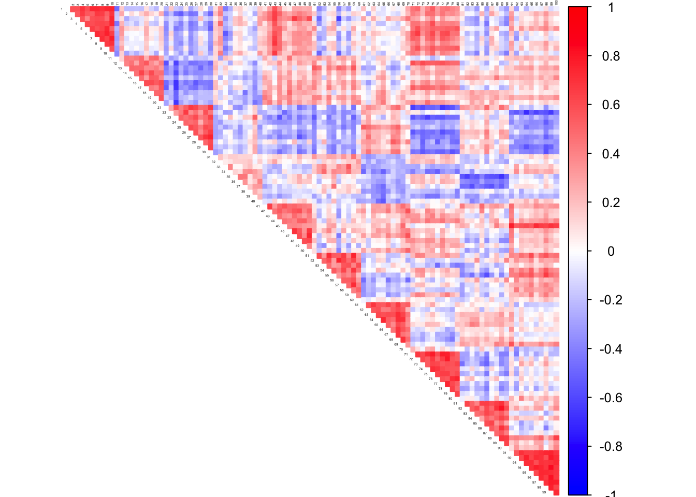

In this script, we investigate if GLASSO and CorShrink can be combined to estimate the inverse correlation matrix or the partial correlation matrix.
library(CorShrink)
library(glasso)
library(Matrix)
library(pracma)
library(corrplot)
library(corpcor)The proposed model is as follows.
Split the data \(D_{N \times P}\) where \(N\) is the number of samples and \(P\) the number of features into two components - \(Dg_{N_1 \times P}\) and \(Dc_{N_2 times P}\) where \(N_1 + N_2 = N\). The dataset \(Dg\) is then used to fit glasso and \(Dc\) is used to fit CorShrink.
Actually we switch between the hold out sets and take average to call the invese correlation matrix and then compare these matrices at the level of the partial correlations.
Split the data \(D_{N \times P}\) where \(N\) is the number of samples and \(P\) the number of features into two components - \(Dg_{N_1 \times P}\) and \(Dc_{N_2 times P}\) where \(N_1 + N_2 = N\). The dataset \(Dg\) is then used to fit glasso and \(Dc\) is used to fit CorShrink.
glasso_corshrink_combine_pcor <- function(data_g, data_c, lambda_glasso=0.1){
if(ncol(data_g) != ncol(data_c)){
stop("data_g and data_c must have same number of columns (features)")
}
S_glasso <- cov(data_g, method = "pearson")
out <- glasso(S_glasso, lambda_glasso)
L <- pracma::sqrtm(out$wi)$B
data_new <- t(L %*% t(data_c))
corshrink_out <- CorShrink::CorShrinkData(data_new)$cor
inv_est <- L %*% corshrink_out %*% t(L)
pcor_est <- -cov2cor(inv_est)
diag(pcor_est) <- rep(1, dim(pcor_est)[1])
return(pcor_est)
}glasso_corshrink_combine_cor <- function(data_g, data_c, lambda_glasso=0.1){
if(ncol(data_g) != ncol(data_c)){
stop("data_g and data_c must have same number of columns (features)")
}
S_glasso <- cov(data_g, method = "pearson")
out <- glasso(S_glasso, lambda_glasso)
L <- pracma::sqrtm(out$wi)$B
Lcor <- pracma::sqrtm(out$w)$B
data_new <- t(L %*% t(data_c))
corshrink_out <- CorShrink::CorShrinkData(data_new)$cor
cor_est <- cov2cor(Lcor %*% corshrink_out %*% t(Lcor))
return(cor_est)
}We simulate from a hub correlation population structure model.
################# Choice of n and P ############################
n <- 10
P <- 100
################# Generate the hub correlation matrix #########################
block <- 10
mat <- 0.3*diag(1,block) + 0.7*rep(1,block) %*% t(rep(1, block))
Sigma <- bdiag(mat, mat, mat, mat, mat, mat, mat, mat, mat, mat)
corSigma <- cov2cor(Sigma)
pcorSigma <- cor2pcor(corSigma)
data <- MASS::mvrnorm(n,rep(0,P),Sigma)
S <- cov(data, method = "pearson")col2 <- c("blue", "white", "red")
corrplot(pcorSigma, diag = FALSE,
col = colorRampPalette(col2)(200),
tl.pos = "td", tl.cex = 0.2, tl.col = "black",
rect.col = "white",na.label.col = "white",
method = "color", type = "upper")glasso1 <- glasso(S, 0.1)
pcor_est2 <- -cov2cor(glasso1$wi)
diag(pcor_est2) <- rep(1, dim(pcor_est2)[1])
cor_est2 <- cov2cor(glasso1$w)
col2 <- c("blue", "white", "red")
corrplot(pcor_est2, diag = FALSE,
col = colorRampPalette(col2)(200),
tl.pos = "td", tl.cex = 0.2, tl.col = "black",
rect.col = "white",na.label.col = "white",
method = "color", type = "upper")corrplot(cor_est2, diag = FALSE,
col = colorRampPalette(col2)(200),
tl.pos = "td", tl.cex = 0.2, tl.col = "black",
rect.col = "white",na.label.col = "white",
method = "color", type = "upper")
cor_est3 <- CorShrink::CorShrinkData(data)$cor
col2 <- c("blue", "white", "red")
corrplot(cor_est3, diag = FALSE,
col = colorRampPalette(col2)(200),
tl.pos = "td", tl.cex = 0.2, tl.col = "black",
rect.col = "white",na.label.col = "white",
method = "color", type = "upper")glasso_indices <- sample(1:n, floor(n/2), replace = FALSE)
corshrink_indices <- setdiff(1:n, glasso_indices)
out1 <- glasso_corshrink_combine_pcor(data[glasso_indices, ],
data[corshrink_indices, ],
lambda_glasso = 0.1)
out2 <- glasso_corshrink_combine_pcor(data[corshrink_indices, ],
data[glasso_indices, ],
lambda_glasso = 0.1)
pcor_est <- 0.5*(out1+out2)
col2 <- c("blue", "white", "red")
corrplot(pcor_est, diag = FALSE,
col = colorRampPalette(col2)(200),
tl.pos = "td", tl.cex = 0.2, tl.col = "black",
rect.col = "white",na.label.col = "white",
method = "color", type = "upper")glasso_indices <- sample(1:n, floor(n/2), replace = FALSE)
corshrink_indices <- setdiff(1:n, glasso_indices)
out1 <- glasso_corshrink_combine_cor(data[glasso_indices, ],
data[corshrink_indices, ],
lambda_glasso = 0.1)
out2 <- glasso_corshrink_combine_cor(data[corshrink_indices, ],
data[glasso_indices, ],
lambda_glasso = 0.1)
cor_est <- 0.5*(out1+out2)
col2 <- c("blue", "white", "red")
corrplot(cor_est, diag = FALSE,
col = colorRampPalette(col2)(200),
tl.pos = "td", tl.cex = 0.2, tl.col = "black",
rect.col = "white",na.label.col = "white",
method = "color", type = "upper")We compare the GLASSO and GLASSO+CorShrink strategies by comparing the estimated partial correlations from these methods with the population partial correlation
mean(sqrt((as.matrix(pcor_est) - as.matrix(pcorSigma))^2))## [1] 0.1226968mean(sqrt((as.matrix(pcor_est2) - as.matrix(pcorSigma))^2))## [1] 0.01573979mean(sqrt((as.matrix(cor_est) - as.matrix(corSigma))^2)) ## glasso+corshrink## [1] 0.2275878mean(sqrt((as.matrix(cor_est2) - as.matrix(corSigma))^2)) ## glasso## [1] 0.1972363mean(sqrt((as.matrix(cor_est3) - as.matrix(corSigma))^2)) ## corshrink## [1] 0.08011863This R Markdown site was created with workflowr